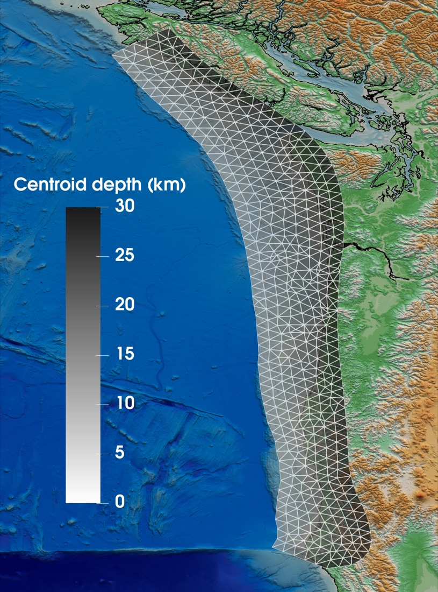
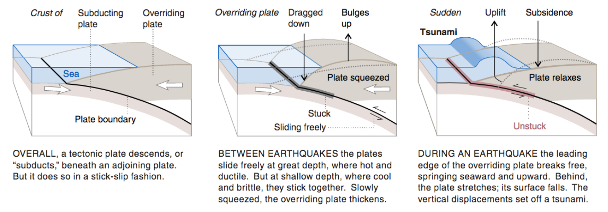

via Large-Scale Multi-GPU FFT Convolution, Applied to the Cascadia Subduction Zone
Bowen Shi, Sreeram Venkat, Stefan Henneking, Omar Ghattas
Oden Institute for Computational Engineering and Sciences The University of Texas at Austin
Fault slip→Seafloor motion→Tsunami
Rupture scenario: FakeQuakes (Melgar et al., JGR Solid Earth, 2016)

The Cascadia fault interface, colored by depth
Problem formulation
“The Big One”: the Cascadia Subduction Zone
A 1,000 km fault just off the Pacific Northwest coast
Last great earthquake: January 1700. Silent for 326 years
about a 10 to 15% chance of a magnitude 9 in the next 50 years
The tsunami reaches the coast within minutes
Tsunami early warning aims to forecast the tsunami in real time, from pressure sensors on the seafloor
The physical problem
A subduction zone earthquake causes a tsunami

Figure: U.S. Geological Survey
Pressure waves reach the seafloor sensors in seconds; the tsunami follows in minutes
Physical model
Linear wave propagation: seismic and tsunami waves
Earthquake: elastic waves in a layered Earth
fault slip s → seafloor motion m
Tsunami: acoustic–gravity waves in the ocean
seafloor motion m → waveforms q
The seafloor motion couples them: output of the first, input of the second
Motivation
Beyond Gaussian forecasts, we need data
2025 Gordon Bell Prize: a real-time tsunami forecast for Cascadia, from seafloor pressure sensors
based on a Gaussian prior: fast and exact, but limited to Gaussian settings
Machine learning can go beyond Gaussian, but it needs training data
Great earthquakes are rare: the data must be simulated
stochastic earthquake sources from FakeQuakes
We need 104 to 106 earthquakes, each with its tsunami
The challenge
Large-scale high-fidelity simulation is expensive
A large domain, and short wavelengths that must be resolved
tsunami: a mesh of 14,473,092 hexahedral elements
one ocean simulation takes about 1 hour on 512 A100 GPUs
For one earthquake, the seafloor motion alone has 618 million unknowns
How can we generate a large amount of high-fidelity data?
Our solution: exploit the linear time-invariant structure, with high-performance multi-GPU computing. The operators are computed offline and stay resident in GPU memory
Structure · 1
Both wave models are linear and time-invariant
Tsunami:f = normal seafloor velocity, x = acoustic–gravity state (velocity and pressure)
Earthquake:f = earthquake source (slip rate), x = seismic wave field
A, B, C do not change with time: the system is linear time-invariant (LTI)
So the output is a convolution of the input with the impulse responses Fk
Compute the impulse responses Fk once. Reuse them for every earthquake
Structure · 2
FFT-based block Toeplitz matvec
Our problem
Earthquake-to-tsunami operator
Multi-GPU
Many GPUs: partition across the seafloor
Offline, once
Computing two Toeplitz operators offline
2.4 million seafloor points, but only 963 fault patches and 196 waveforms (175 sensors + 21 QoI)
Tsunami operator: adjoint solves, one per waveform, 196 in total
forward solves would mean 2.4 million tsunami solves
Earthquake operator: frequency–wavenumber method for a layered Earth, accelerated on GPUs
one impulse at a fault patch gives the Green’s functions at all seafloor points
Experiments
Full CSZ setting
Problem: the Cascadia Subduction Zone
fault discretized by 963 triangular subfaults
2,416,530 seafloor points, 64 waveform locations
256 time steps, double precision
the two operators need 9.45 TiB of GPU memory
Our implementation: C++ and CUDA, FFT-based matrix-vector product (FFTMatvec)
Baseline: PyTorch conv_transpose1d, the same convolution in the time domain
Machines: TACC Vista, up to 64 GPUs
GH200 partition: 96 GiB per GPU, one GPU per node, InfiniBand
GB200 partition: 184 GiB per GPU, one NVL72 domain
Strong scaling. 60 subfaults, 4 outputs, full 2.4 M seafloor grid. Efficiency at 64 GPUs: 85% and 81%.
Weak scaling. 480 subfaults, 32 outputs, 37,758 seafloor points per GPU. Efficiency at 64 GPUs: 95.8% and 95.1%.
Results: full CSZ
Time for one earthquake, from fault slip to waveforms
24ms
on 64 GB200 GPUs
963 fault patches
2,416,530 seafloor grid points
64 waveforms, 256 time steps of 1 s
PyTorch conv_transpose1d: 522 ms, 21.8× slower
Time to generate 10,000 earthquakes
4 min
87 min
Results: one earthquake
Potential magnitude 9.1 earthquake at the Cascadia Subduction Zone
Fault slip→Seafloor motion→Tsunami
Rupture scenario: FakeQuakes (Melgar et al., JGR Solid Earth, 2016)
Summary
Ultra-fast, high-fidelity waveform simulation of earthquake–tsunami events
Linear time-invariant structure of seismic and tsunami wave propagation: two block Toeplitz matvecs.
Forward solves for the earthquake, with layered-Earth Green’s functions. Adjoint solves for the tsunami.
FFT-based multi-GPU matvec, partitioned only along the seafloor.
10,000 earthquakes in 4 minutes on one NVL72 domain: 64 GB200 GPUs, 9.45 of 11.5 TiB of GPU memory in use. 20× faster than PyTorch, more than 10,000× faster than PDE solves.
arXiv:2608.21763 Supported by DARPA COMPASS, DOD MURI and DOE ASCR. Computing resources: TACC and NERSC.
00:00
→ / Space next · ← back · N notes · P presenter window · F fullscreen · R reset timer · Home / End · type a number + Enter to jump


 fault slip s → seafloor motion m
fault slip s → seafloor motion m seafloor motion m → waveforms q
seafloor motion m → waveforms q